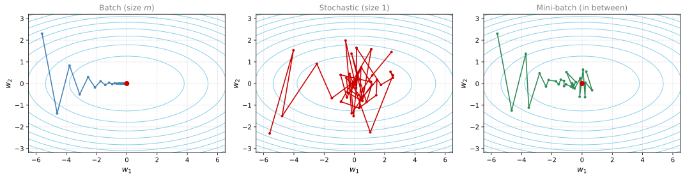

Mini-batch Gradient Descent
deep-learning
optimization
mini-batch
gradient-descent
Splitting the training set into mini-batches, the curly-brace notation, epochs, cost curve noise, and choosing a mini-batch size.
Applying machine learning is a highly empirical, highly iterative process. You have to train a lot of models to find one that works really well, so it helps to be able to train models quickly. One thing that makes this difficult is that deep learning tends to work best in the regime of big data, and training on a large data set is slow. Fast optimization algorithms can therefore really speed up the efficiency of you and your team. This page starts with the first of these ideas, mini-batch gradient descent. Later pages build up exponentially weighted averages and then the momentum, RMSprop, and Adam algorithms on top of it.
Splitting the Training Set into Mini-batches
You have seen previously that vectorization allows you to efficiently compute on all \(m\) examples without an explicit for loop. That is why we stack the training examples into the big matrices
\[ X = \begin{bmatrix} | & | & | & & | \\ x^{(1)} & x^{(2)} & x^{(3)} & \cdots & x^{(m)} \\ | & | & | & & | \end{bmatrix}, \qquad Y = \begin{bmatrix} y^{(1)} & y^{(2)} & y^{(3)} & \cdots & y^{(m)} \end{bmatrix} \]
where \(X\) has dimension \(n_x \times m\) and \(Y\) has dimension \(1 \times m\). Vectorization lets you process all \(m\) examples relatively quickly, but if \(m\) is very large, say 5 million or 50 million or even bigger, it can still be slow. With gradient descent on the whole training set, you have to process all 5 million examples before you take one little step of gradient descent, then process all 5 million examples again before you take another little step.
It turns out you can get a faster algorithm if you let gradient descent start making progress even before you finish processing your entire giant training set. Split the training set into smaller, little baby training sets called mini-batches. Say each mini-batch has just 1,000 examples. Take \(x^{(1)}\) through \(x^{(1000)}\) and call that your first mini-batch, then the next 1,000 examples \(x^{(1001)}\) through \(x^{(2000)}\), and so on.
This introduces a new piece of notation. The first mini-batch is written \(X^{\{1\}}\) with curly braces, the second is \(X^{\{2\}}\), and so on. If you have 5 million training examples total and each mini-batch has 1,000 examples, then you have 5,000 mini-batches, ending with \(X^{\{5000\}}\). You split up \(Y\) accordingly into \(Y^{\{1\}}, Y^{\{2\}}, \dots, Y^{\{5000\}}\). Mini-batch number \(t\) is then the pair
\[ X^{\{t\}}, \; Y^{\{t\}} \]
which contains 1,000 training examples with their corresponding input-output pairs.
NoteThree Kinds of Superscripts
To keep the notation clear, the course now uses three different brackets in superscripts.
- Round brackets \(x^{(i)}\) index into the training set. \(x^{(i)}\) is the \(i\)-th training example.
- Square brackets \(z^{[l]}\) index into the layers of the network. \(z^{[l]}\) is the \(z\) value for layer \(l\).
- Curly brackets \(X^{\{t\}}\) index into the mini-batches. \(X^{\{t\}}, Y^{\{t\}}\) is mini-batch \(t\).
To check your understanding, what are the dimensions of \(X^{\{t\}}\) and \(Y^{\{t\}}\)? Since \(X\) is \(n_x \times m\) and each mini-batch holds 1,000 examples, every \(X^{\{t\}}\) has dimension \(n_x \times 1000\), and every \(Y^{\{t\}}\) has dimension \(1 \times 1000\).
The names of the algorithms come from how much data each processes at a time. Batch gradient descent refers to the gradient descent algorithm we have been using so far, which processes your entire training set all at the same time. The name comes from viewing it as processing the entire batch of training examples at once (not a great name, but that is just what it is called). Mini-batch gradient descent, in contrast, processes a single mini-batch \(X^{\{t\}}, Y^{\{t\}}\) at a time rather than the whole training set.
Algorithm
To run mini-batch gradient descent on the training set above, you run for \(t = 1, \dots, 5000\), because with 1,000 examples per mini-batch there are 5,000 of them. Inside the loop you implement one step of gradient descent using \(X^{\{t\}}, Y^{\{t\}}\). It is as if you had a training set of size 1,000 and ran the algorithm you already know on that little set, using vectorization to process the 1,000 examples all at the same time.
For \(t = 1, \dots, 5000\),
Forward propagation on \(X^{\{t\}}\), with a vectorized implementation that processes 1,000 examples at a time rather than 5 million, \[ \begin{aligned} Z^{[1]} &= W^{[1]} X^{\{t\}} + b^{[1]} \\ A^{[1]} &= g^{[1]}(Z^{[1]}) \\ &\;\;\vdots \\ A^{[L]} &= g^{[L]}(Z^{[L]}) = \hat{Y} \end{aligned} \]
Compute the cost for this mini-batch. The average runs over the 1,000 examples in the mini-batch, and if you use regularization, the regularization term appears as well, \[ J^{\{t\}} = \frac{1}{1000} \sum_{i=1}^{1000} \mathcal{L}\left(\hat{y}^{(i)}, y^{(i)}\right) + \frac{\lambda}{2 \cdot 1000} \sum_{l} \left\lVert W^{[l]} \right\rVert_F^2 \] where \(x^{(i)}, y^{(i)}\) here refer to examples from the mini-batch \(X^{\{t\}}, Y^{\{t\}}\). Because this is the cost on just one mini-batch, it is indexed as \(J^{\{t\}}\). If you are following the lecture videos, note that the slide writes the upper limit of this sum as \(l\), reusing the letter that elsewhere counts the layers of the network. In that formula it means the number of examples in the mini-batch, which is why it is written out as 1,000 here.
Backpropagation to compute the gradients of \(J^{\{t\}}\), still using only \(X^{\{t\}}, Y^{\{t\}}\), then update the parameters, \[ W^{[l]} := W^{[l]} - \alpha \, dW^{[l]}, \qquad b^{[l]} := b^{[l]} - \alpha \, db^{[l]} \]
Everything is exactly the same as when we previously implemented gradient descent, except that instead of running on \(X, Y\) you run on \(X^{\{t\}}, Y^{\{t\}}\).
One full pass through the training set with this loop is called one epoch of training. An epoch is a word that means a single pass through the training set. With batch gradient descent, a single pass through the training set allows you to take only one gradient descent step. With mini-batch gradient descent, a single pass through the training set allows you to take 5,000 gradient descent steps. Of course you usually want multiple passes through the training set, so you would wrap another for loop or while loop around all of this and keep taking passes until the algorithm converges, or at least approximately converges.
When you have a large training set, mini-batch gradient descent runs much faster than batch gradient descent, and it is pretty much what everyone in deep learning uses when training on a large data set.
Review Questions
1. What do the superscripts \(x^{(i)}\), \(z^{[l]}\), and \(X^{\{t\}}\) each index, and what are the dimensions of \(X^{\{t\}}\) and \(Y^{\{t\}}\) for mini-batches of 1,000 examples?
TipAnswer
Round brackets index training examples (\(x^{(i)}\) is the \(i\)-th example), square brackets index layers (\(z^{[l]}\) belongs to layer \(l\)), and curly brackets index mini-batches (\(X^{\{t\}}, Y^{\{t\}}\) is mini-batch \(t\)). With mini-batches of 1,000 examples, \(X^{\{t\}}\) has dimension \(n_x \times 1000\) and \(Y^{\{t\}}\) has dimension \(1 \times 1000\).
1. With a training set of 5 million examples split into mini-batches of 1,000, how many gradient descent steps does one epoch of batch gradient descent take, and how many does one epoch of mini-batch gradient descent take?
TipAnswer
One epoch is a single pass through the training set. Batch gradient descent takes exactly one gradient descent step per epoch, because it must process all 5 million examples before each step. Mini-batch gradient descent takes 5,000 steps per epoch, one for each mini-batch.
1. Which notation would you use to denote the 3rd layer’s activations when the input is the 7th example from the 8th mini-batch?
\(a^{[8]\{3\}(7)}\)
\(a^{[3]\{7\}(8)}\)
\(a^{[8]\{7\}(3)}\)
\(a^{[3]\{8\}(7)}\)
TipAnswer
d. Square brackets index the layer (3rd layer), curly brackets index the mini-batch (8th mini-batch), and round brackets index the training example (7th example), so the correct notation is \(a^{[3]\{8\}(7)}\).
1. Which of these statements about mini-batch gradient descent do you agree with?
Training one epoch (one pass through the training set) using mini-batch gradient descent is faster than training one epoch using batch gradient descent.
You should implement mini-batch gradient descent without an explicit for-loop over different mini-batches, so that the algorithm processes all mini-batches at the same time (vectorization).
One iteration of mini-batch gradient descent (computing on a single mini-batch) is faster than one iteration of batch gradient descent.
TipAnswer
c. A single iteration only processes one mini-batch of examples instead of the entire training set, so it is much faster than one iteration of batch gradient descent. Statement a is wrong because one epoch passes through the same total number of examples either way, and mini-batch gradient descent adds the overhead of many separate parameter updates. Statement b is wrong because the mini-batches cannot be processed at the same time. The parameters are updated after each mini-batch, and the next mini-batch must use the updated parameters, so the for-loop over mini-batches is unavoidable. Vectorization applies within a mini-batch, across its examples.
Understanding Mini-batch Gradient Descent
With batch gradient descent, on every iteration you go through the entire training set, and you expect the cost to go down on every single iteration. If you plot the cost function \(J\) as a function of iterations, it should decrease on every iteration, and if it ever goes up, even on one iteration, something is wrong. Maybe your learning rate is too big.
With mini-batch gradient descent, the plot may not decrease on every iteration. On every iteration you are processing some \(X^{\{t\}}, Y^{\{t\}}\), and the cost \(J^{\{t\}}\) is computed using just that mini-batch. It is as if on every iteration you are training on a different training set. So the plot of \(J^{\{t\}}\) trends downwards but is also a little bit noisier. It is okay if it does not go down on every iteration. The reason for the noise is that maybe \(X^{\{1\}}, Y^{\{1\}}\) happens to be an easy mini-batch, so its cost is a bit lower, but then just by chance \(X^{\{2\}}, Y^{\{2\}}\) is a harder mini-batch, maybe with some mislabeled examples in it, so its cost is a bit higher. That is why you get these oscillations.
Two Extremes of Mini-batch Size
One of the parameters you need to choose is the size of your mini-batch. Let \(m\) be the training set size. The two extremes are the following.
- Mini-batch size \(= m\). You end up with exactly one mini-batch, \(X^{\{1\}}, Y^{\{1\}}\), equal to your entire training set. This is just batch gradient descent.
- Mini-batch size \(= 1\). This gives an algorithm called stochastic gradient descent, where every example is its own mini-batch. You look at the first example and take a gradient descent step on it, then look at the second example and take a step on that, then the third, and so on, one single training example at a time.
Consider what these two extremes do on the contours of a cost function. Batch gradient descent starts somewhere and takes relatively low-noise, relatively large steps, and just keeps marching toward the minimum. Stochastic gradient descent takes a step based on just a single training example on every iteration. Most of the time the step heads toward the global minimum, but sometimes it heads in the wrong direction if that one example happens to point in a bad direction, so it can be extremely noisy. On average it goes in a good direction. And stochastic gradient descent never converges in the usual sense. It always just oscillates and wanders around the region of the minimum, but it never just heads to the minimum and stays there.

In practice, the mini-batch size you use is somewhere in between 1 and \(m\), because 1 and \(m\) are respectively too small and too large.
- If you use batch gradient descent (mini-batch size \(m\)), you process a huge training set on every iteration. The main disadvantage is that it takes too long per iteration, assuming you have a large training set. If you have a small training set, batch gradient descent is fine.
- If you use stochastic gradient descent (mini-batch size 1), it is nice that you get to make progress after processing just one example, and the noisiness can be reduced by using a smaller learning rate. But the huge disadvantage is that you lose almost all the speedup from vectorization, because you process a single training example at a time, which is very inefficient.
What works best in practice is something in between, a mini-batch size that is not too big and not too small. This gives the fastest learning in practice, and it has two good things going for it. First, you get a lot of vectorization. With a mini-batch size of 1,000, you vectorize across 1,000 examples, which is much faster than processing them one at a time. Second, you can make progress without waiting to process the entire training set. Using the earlier numbers, each epoch through the training set gives you 5,000 gradient descent steps.
With mini-batch gradient descent, the path toward the minimum is not guaranteed to head there on every iteration, but it tends to head in the direction of the minimum much more consistently than stochastic gradient descent. It also does not always exactly converge, oscillating in a small region instead. If that is an issue, you can slowly reduce the learning rate, which is the topic of learning rate decay on a later page.
Choosing the Mini-batch Size
If the mini-batch size should be neither \(m\) nor 1 but something in between, how do you choose it? Here are some guidelines.
- Small training set, just use batch gradient descent. If the training set is small, there is no point using mini-batch gradient descent, since you can process the whole set quite fast. Small here means less than maybe 2,000 examples.
- Otherwise, typical mini-batch sizes are 64 to 512. Because of the way computer memory is laid out and accessed, your code sometimes runs faster if the mini-batch size is a power of 2, so 64 (\(2^6\)), 128 (\(2^7\)), 256 (\(2^8\)), and 512 (\(2^9\)) are all common choices. The earlier examples used a mini-batch size of 1,000. If you really wanted that, you would use 1,024 instead, which is \(2^{10}\), although mini-batches of 1,024 are a bit more rare than the 64 to 512 range.
- Make sure a mini-batch fits in CPU/GPU memory. This depends on your application and how large a single training example is, but if you ever process a mini-batch that does not fit in CPU or GPU memory, you find that performance suddenly falls off a cliff and gets much worse.
In practice the mini-batch size is another hyperparameter over which you might do a quick search to find the one that is most efficient at reducing the cost function \(J\). Try a few different powers of 2 and pick the one that makes your gradient descent optimization algorithm as efficient as possible.
You now know how to implement mini-batch gradient descent and make your algorithm run much faster, especially on a large training set. It turns out there are even more efficient algorithms than gradient descent or mini-batch gradient descent, which are the subject of the next pages.
Review Questions
1. When you plot the cost during mini-batch gradient descent, it does not decrease on every iteration. Why is that not necessarily a sign that something is wrong?
TipAnswer
Each iteration computes the cost \(J^{\{t\}}\) on a different mini-batch, so it is as if every iteration is evaluated on a different training set. Some mini-batches are easier (lower cost) and some are harder, for example containing mislabeled examples (higher cost). The plot should trend downwards overall but is expected to be noisy. With batch gradient descent, in contrast, the cost is computed on the same full training set every iteration and should decrease every single iteration.
1. What is the main disadvantage of stochastic gradient descent, and what two advantages does an in-between mini-batch size give you?
TipAnswer
Stochastic gradient descent processes one example at a time, so you lose almost all the speedup from vectorization, which makes processing very inefficient. An in-between mini-batch size gives you (1) a lot of vectorization, since you process, say, 1,000 examples at once, and (2) progress without waiting for the whole training set, since each epoch yields many gradient descent steps.
1. Which mini-batch sizes are typical in practice, and why are powers of 2 preferred?
TipAnswer
For training sets bigger than about 2,000 examples, typical mini-batch sizes range from 64 to 512 (with 1,024 seen but rarer). Powers of 2 such as 64, 128, 256, and 512 are preferred because of the way computer memory is laid out and accessed, which sometimes makes the code run faster. You should also make sure a mini-batch fits in CPU/GPU memory, otherwise performance suddenly falls off a cliff. Below about 2,000 examples, just use batch gradient descent.
1. Which of the following is true about batch gradient descent?
It has as many mini-batches as examples in the training set.
It is the same as the mini-batch gradient descent when the mini-batch size is the same as the size of the training set.
It is the same as stochastic gradient descent, but we do not use random elements.
TipAnswer
b. When the mini-batch size equals \(m\), there is only one mini-batch per epoch, which is exactly batch gradient descent. Option a describes the other extreme, stochastic gradient descent, where every example is its own mini-batch. Option c is wrong because stochastic gradient descent uses mini-batches of size 1, which is not the same algorithm as batch gradient descent regardless of how the examples are ordered.
1. Suppose your learning algorithm’s cost \(J\), plotted as a function of the number of iterations, trends downward but oscillates noisily from iteration to iteration, like the mini-batch plot shown earlier in this section. Which of the following do you agree with?
If you are using mini-batch gradient descent, something is wrong. But if you are using batch gradient descent, this looks acceptable.
Whether you are using batch gradient descent or mini-batch gradient descent, this looks acceptable.
If you are using mini-batch gradient descent, this looks acceptable. But if you are using batch gradient descent, something is wrong.
Whether you are using batch gradient descent or mini-batch gradient descent, something is wrong.
TipAnswer
c. With mini-batch gradient descent, each iteration computes the cost \(J^{\{t\}}\) on a different mini-batch, so some noise from easier and harder mini-batches is expected as long as the overall trend is downward. With batch gradient descent, every iteration processes the full training set, so the cost should decrease on every single iteration. If it ever goes up, something is wrong, for example a learning rate that is too big.